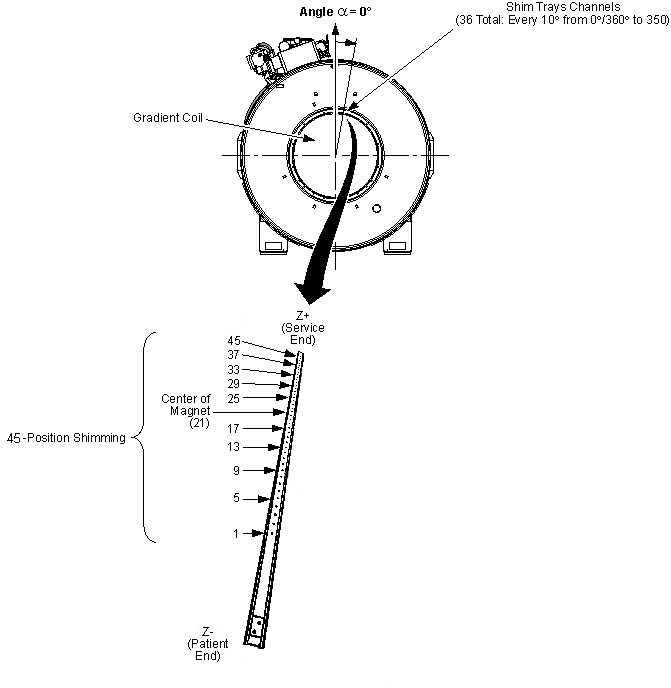

Illustration 42: Example ShimTool Printed Report: Pages 3 and 4 of 45-Position Report

| NOTE: | Refer to the following:
|
Illustration 42: Example ShimTool Printed Report: Pages 3 and 4 of 45-Position Report
Illustration 43: Example ShimTool Printed Report, 18-Tray Passive Shimming: Pages 3 and 4

Illustration 44: Shim Tray Layout
